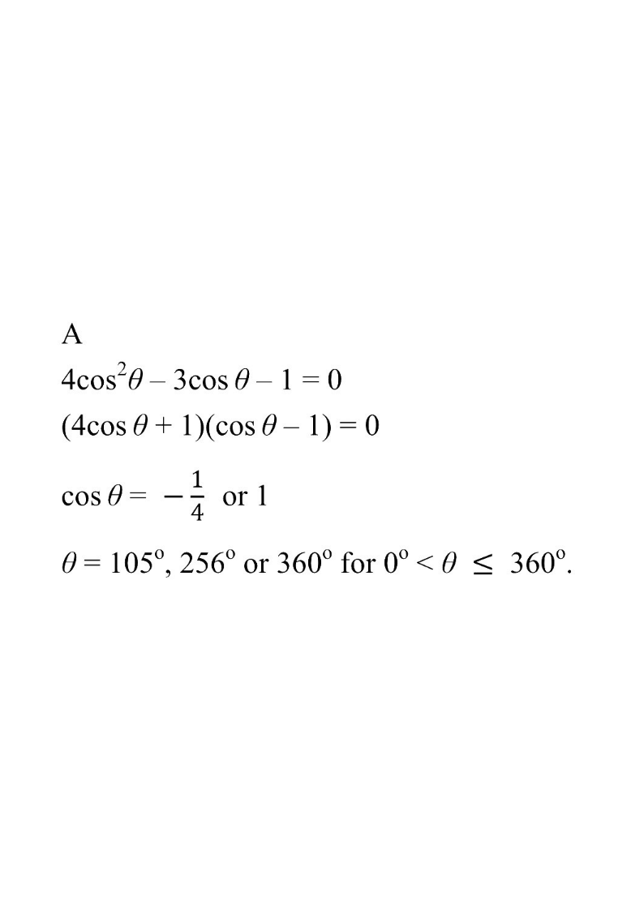

三角學 · 1 分題

$\cos\theta=-\dfrac{1}{4}$ 或 $\cos\theta=1$。
$\cos\theta=1$：在 $0^{\circ}<\theta\le360^{\circ}$ 中只有 $\theta=360^{\circ}$（$0^{\circ}$ 不合）→ $1$ 個根。
$\cos\theta=-\dfrac{1}{4}$：$\theta\approx104.5^{\circ}$ 或 $255.5^{\circ}$ → $2$ 個根。
共 $3$ 個根，故選 A。